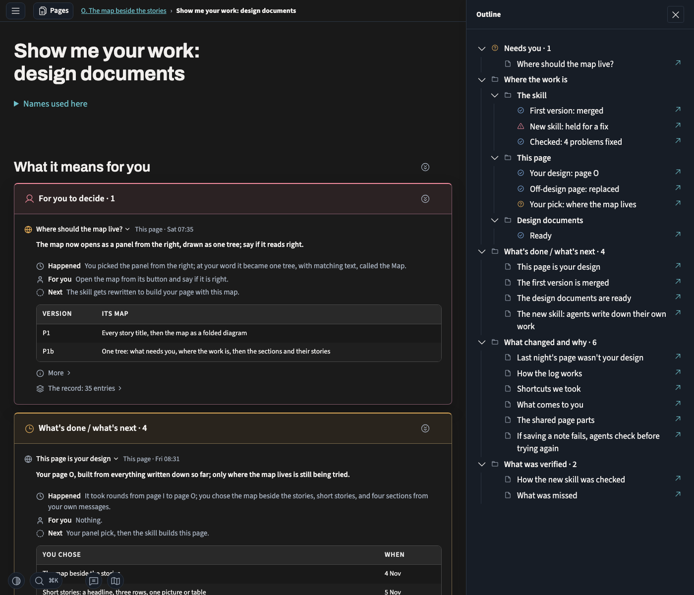
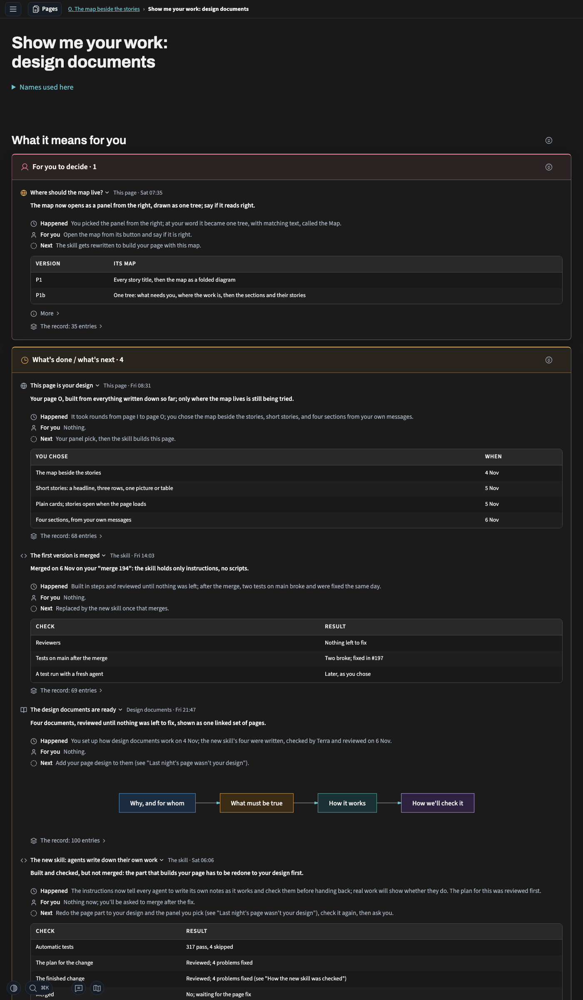

What must be observably true, and what decides pass or fail: the page you approved first, then the obligations and the entities they're written over.
This is the page the obligations describe. You approved it on 7 Nov ("this is the deisgn i wnat"): page O, with your four sections and their stories, and the Map as one tree in a panel that opens from the right. R19–R25 are written against it.


The approved file is p1b-approved-2026-11-07.html in this work's owner pages in memory-logs, sha256 ece32b0cdb2a6fe4…; these captures come from it at 1400 wide. Its stories are from this project's log through 7 Nov. On a phone, the Map panel covers the page and closes when you follow a row. There's no band of counts at the top and no chart of who wrote the log: what needs you is the Map's first branch and your first section, and whether rows came as the work happened comes from the audits.